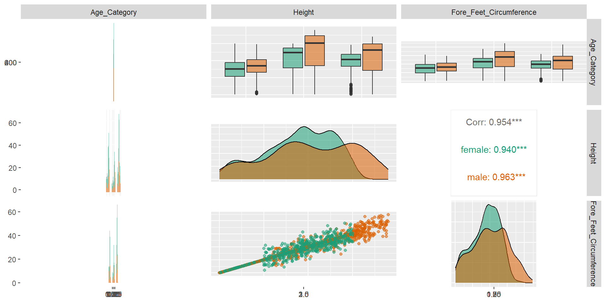

Beyond Basics: Elevate Your Plots
Dr. Thiyanga S. Talagala
Department of Statistics, Faculty of Applied Sciences
University of Sri Jayewardenepura, Sri Lanka
Department of Statistics, Faculty of Applied Sciences
University of Sri Jayewardenepura, Sri Lanka
Packages
Data
# A tibble: 1,700 × 9
Category Age_Category Gender Flank_Girth Heart_Girth Neck_Girth Weight Height
<chr> <chr> <chr> <dbl> <dbl> <dbl> <dbl> <dbl>
1 African less than 1… male 291. 239. 211. 1775. 2.46
2 African less than 1… male 270. 331. 119. 1564. 2.28
3 African less than 1… male 291. 275. 200. 2070. 2.56
4 African less than 1… male 285. 253. 111. 1716. 2.33
5 African less than 1… male 184. 389. 180. 2736. 2.38
6 African less than 1… male 235. 284. 158. 1773. 2.2
7 African less than 1… male 265. 262. 161. 1651. 2.68
8 African less than 1… male 226. 226. 123. 2053. 2.67
9 African less than 1… male 266. 290. 191. 2159. 2.63
10 African less than 1… male 163. 332. 172. 2075. 2.12
# ℹ 1,690 more rows
# ℹ 1 more variable: Fore_Feet_Circumference <dbl># A tibble: 7,937 × 7
Country Code Region Year Cooking Electricity Income
<fct> <fct> <fct> <dbl> <dbl> <dbl> <fct>
1 Aruba ABW Latin America & Caribbean 1990 NA 100 H
2 Aruba ABW Latin America & Caribbean 2000 NA 91.7 H
3 Aruba ABW Latin America & Caribbean 2013 NA 100 H
4 Aruba ABW Latin America & Caribbean 2014 NA 100 H
5 Aruba ABW Latin America & Caribbean 2015 NA 100 H
6 Aruba ABW Latin America & Caribbean 2016 NA 100 H
7 Aruba ABW Latin America & Caribbean 2017 NA 100 H
8 Aruba ABW Latin America & Caribbean 2018 NA 100 H
9 Aruba ABW Latin America & Caribbean 2019 NA 100 H
10 Aruba ABW Latin America & Caribbean 2020 NA 100 H
# ℹ 7,927 more rowsPairwise plot matrix, scatterplot plot matrix, parallel coordinates plot, survival plot

Your turn: Fix aspect ratio of the plots.
Aspect Ratio


ratio aspect ratio, expressed as \(\frac{y}{x}\)
Beware!
Beware!
Combine separate ggplots into the same graphic

Arranging plots into a grid

Creating graphics with details from statistical tests
Defaults return
✅ raw data + distributions ✅ descriptive statistics ✅ inferential statistics ✅ effect size + CIs ✅ pairwise comparisons ✅ Bayesian hypothesis-testing ✅ Bayesian estimation
To visualize the distribution of a single variable and check if its mean is significantly different from a specified value with a one-sample test
Publication Ready Plots
Interactively explore your data by visualizing it with the ggplot2 package
In-class demo
Add graphical information about one of the main panel’s axis.
library(ggside)
ggplot(elephants, aes(x=Height, y=Fore_Feet_Circumference, colour = Gender)) +
geom_point(size = 2) +
geom_xsideboxplot(aes(y =Gender), orientation = "y") +
geom_ysidedensity(aes(x = after_stat(density)), position = "stack") +
scale_ysidex_continuous(guide = guide_axis(angle = 90), minor_breaks = NULL) +
theme(ggside.panel.scale = .3, aspect.ratio = ar)library(ggside)
ggplot(elephants, aes(x=Height, y=Weight, colour = Gender)) +
geom_point(size = 2) +
geom_xsideboxplot(aes(y =Gender), orientation = "y") +
geom_ysidedensity(aes(x = after_stat(density)), position = "stack") +
scale_ysidex_continuous(guide = guide_axis(angle = 90), minor_breaks = NULL) +
theme(ggside.panel.scale = .3)